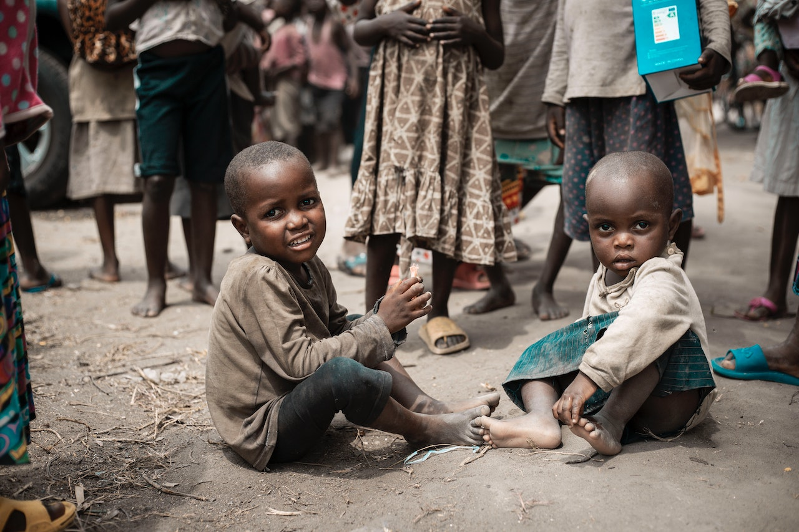

Sustainable Development Goal 1 calls for an end to poverty in all its manifestations by 2030. It aims to ensure social protection for the poor and vulnerable, increase access to basic services and support people harmed by climate-related extreme events and other economic, social and environmental shocks and disasters.
Space technologies are central, among other things, in:
•Forecasting natural disasters and better coordinate subsequent aid provision
•Optimising sustainable utilisation of natural resources
•Providing efficient support to vulnerable populations
•Mapping populated areas and their access to basic services
Overall, space technologies can contribute to the prevention of people falling below the poverty line and help target specific support to those in need.
>Back to Home